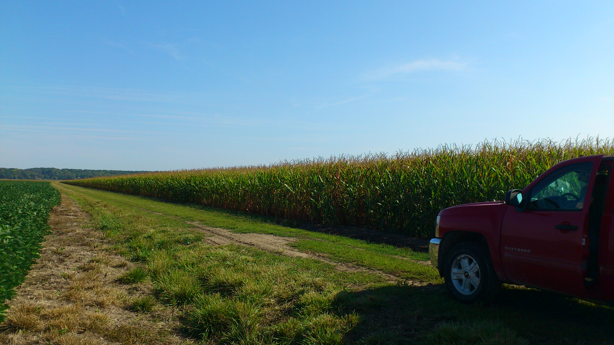
GOOD CORN
FOR GOOD FOOD
アメリカ産NON-GMOとうもろこしを原料に、
コーングリッツ・ホミニーフィードを製造。
食のおいしさの土台を、姫路から全国へ。
スナック菓子 ／ ビール原料 ／ 焼酎・ウイスキー原料 ／ ピザ打ち粉 ／ 雑穀原料 ／ パン原料 ／ 唐揚げ粉・天ぷら粉 ／ コーンフラワー ／ ホミニーフィード
穀物加工約90年の技術と誠実さ
当社は創業以来、小麦製粉を事業の柱としてまいりました。時代の変化とともにコーングリッツ製造へと事業を転換し、約90年にわたり穀物加工に携わっております。信頼できる生産者から穀物を輸入し、当社の技術でひと手間加えることで、おいしさの可能性を広げています。
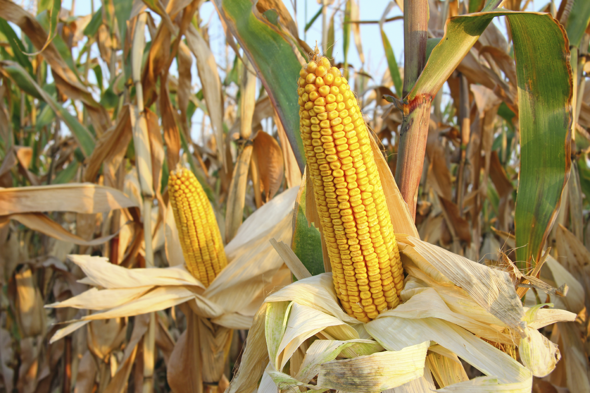
コーングリッツ製造
NON-GMOコーンをドライミリング製法で粉砕。用途別に様々な粒度の製品を製造しております。
詳しく見る →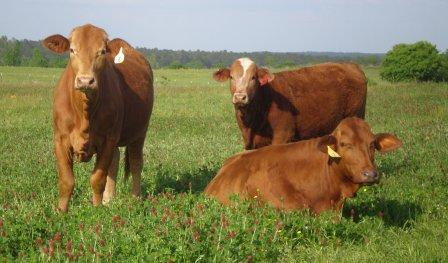
ホミニーフィード
グリッツ製造時に分離される胚芽・皮・デンプン質を原料にした高エネルギー飼料・きのこ培地。
詳しく見る →
姫路港サイロ・倉庫業
西播磨最大の穀物サイロを保有。保税蔵置場として輸入穀物の保管・通関・輸送をワンストップで対応。
詳しく見る →遺伝子組み換えではないコーンを使用
アメリカの契約農場にて生産された「分別生産流通管理済みコーン」のみを使用。様々な粒度でご用意し、オーダーメイドも承ります。

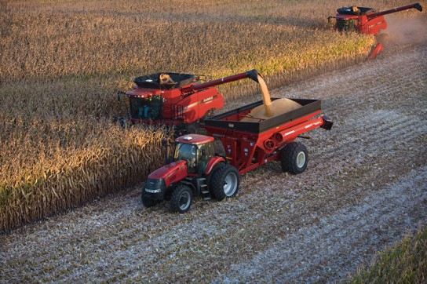

事 業 内 容
コーングリッツ製造・ホミニーフィード製造・倉庫業
コーングリッツを作っています
コーングリッツとは、コーンを乾燥させた後に細かく粉砕したものです（ドライミリング）。主に、ビールやスナック菓子・食品添加物など様々な食品原料としてご使用いただいております。
当社では、アメリカ産分別生産流通管理済み（旧表記：非遺伝子組み換え）コーンを原料に使用しております。
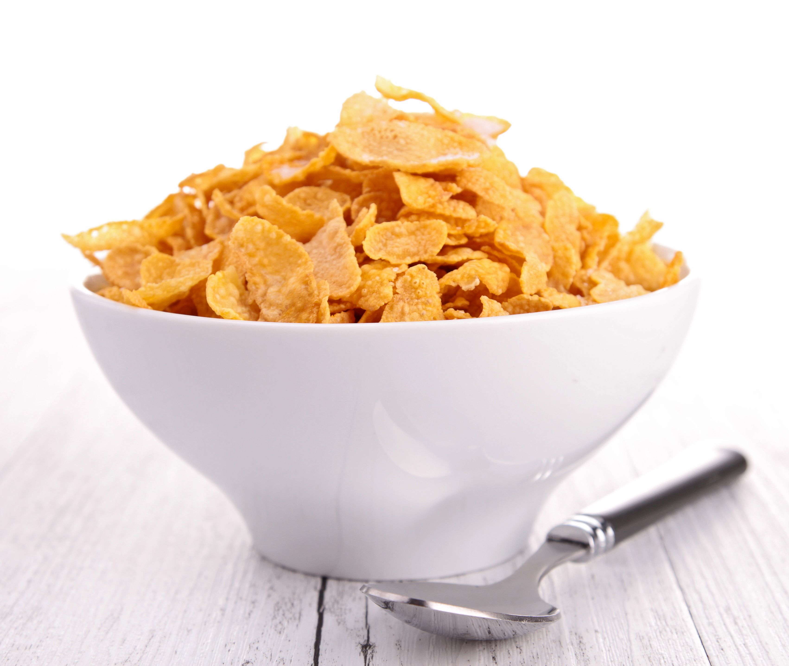
畜産用飼料としてホミニーフィード
コーンは捨てるところの無い万能な穀物と言われています。グリッツ製造時に発生する胚芽・皮・デンプン質は飼料用として利用されております。
飼料価値も高く、多くの飼料会社様・畜産農家様にご愛用いただいております。また、きのこの培地としても広くご利用頂いております。
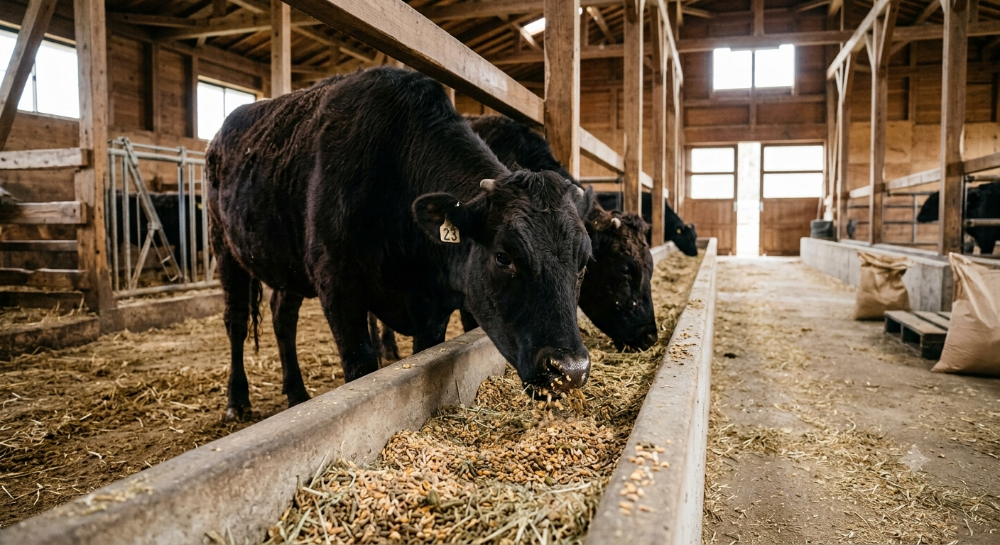
コーンはアレルギー反応が極めて少ない穀物
食物アレルギーは、身体が食物に含まれるタンパク質を異物として認識し、過敏な反応を起こすことです。我が国における食物アレルギー体質をもつ方は全人口の１〜２％（乳児に限定すると約10％）と考えられています。そういった中で、とうもろこしに起因するアレルギーは例が極めて少なく、比較的安心して食べることのできる穀物といえます。

会 社 概 要
山陽製粉株式会社について
| 商号 | 山陽製粉株式会社 |
|---|---|
| 設立 | 昭和12年10月5日 |
| 資本金 | 2,000万円 |
| 代表者 | 代表取締役 宮本義太郎 |
| 本社所在地 |

|
| 工場所在地 | 〒672-8064 兵庫県姫路市飾磨区細江字浜万才1296番地 JR姫路駅より車で15分 山陽電車飾磨駅より車で10分 📍 Googleマップで開く |
| 事業内容 | コーングリッツ及びその副産物の製造販売業 倉庫業（保税蔵置場指定） |
| 取引銀行 | 播州信用金庫 駅前支店 三井住友銀行 姫路支店 |
| 所属団体 | 一般社団法人 日本コーングリッツ協会 一般社団法人 日本倉庫協会（兵庫県倉庫協会） 一般社団法人 姫路植物検疫協会 姫路商工会議所 |
| 関連会社 | 宮本産業株式会社 姫路港サイロ株式会社 → |

工場・倉庫案内
姫路港に隣接した製粉工場・営業倉庫
当工場は、古来より瀬戸内海の交通の要所として栄え、現在は国際拠点港湾に指定されている「姫路港」に隣接しています。陸上物流では山陽自動車道へのアクセスが容易です。海上物流では神戸港・大阪港を経由し、北海道から沖縄まで全国へのお届けが可能です。
製粉工場
敷地面積 5,491㎡
【構造】
工場本館 鉄筋コンクリート6階
包装棟 鉄骨ALC2階
製品倉庫 鉄骨平屋建
【設備】
原料タンク 鉄板製12基 750トン
製品タンク 鉄板製9基 350トン
営業倉庫
延床面積 3,309㎡
【構造】
鉄筋コンクリート造り3階建
1階 1,094㎡（燻蒸倉庫）
2階 1,094㎡（燻蒸倉庫）
3階 1,089㎡（一般倉庫）
【設備】
荷物専用エレベーター 4トン 1基

グリッツ専用タンクローリー
自社所有のグリッツ専用タンクローリーを2台保有しております。お客様のご要望に応じた安定した輸送体制を整えています。
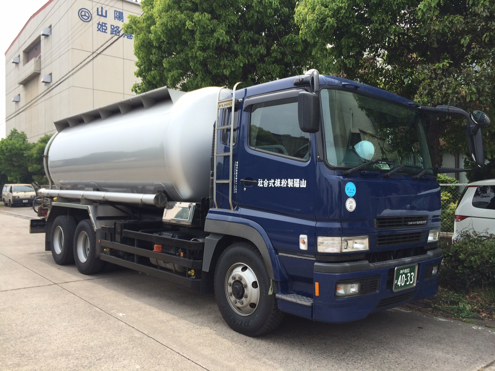
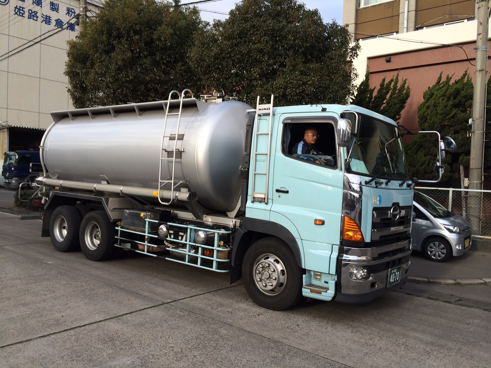
沿 革
昭和12年創業から現在まで
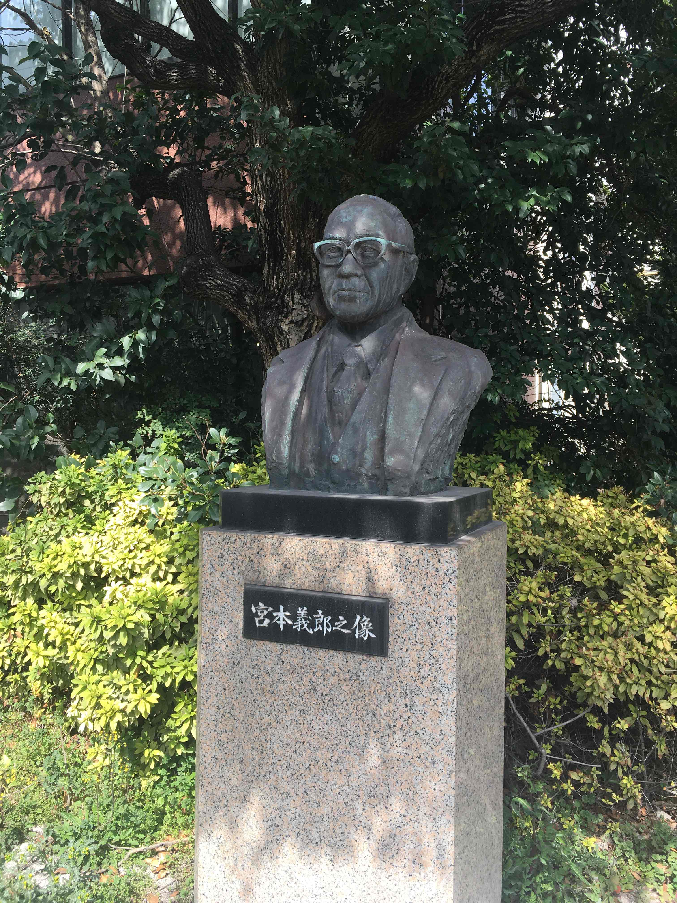
トウモロコシは、古来より人類が繋いできた命の源です。私たちは、その黄金の一粒一粒に宿る可能性を、プロの技術と感性で研ぎ澄まし、あらゆる食品の「おいしさの土台」へと昇華させます。
私たちが作るのは、主役ではありません。しかし、私たちが生み出す一袋がなければ、あのビールの喉越しも、あの菓子の軽やかな食感も生まれません。目立つことはなくとも、食の根幹を支える誇りを胸に。私たちは、自然の恵みと健やかな未来を繋ぐ、確かな架け橋であり続けます。
行 動 規 範
感性を磨き、期待を超える
数値化できない「色・香り・手触り」を大切にします。機械に使われるのではなく、長年培った技術で機械を使いこなし、原料の個性を最大限に引き出します。
誠実な循環を築く
産地からお客様まで、食のバトンを繋ぐすべての方々を大切なパートナーと考えます。透明性の高い対話と誠実な商いを通じて、永く信頼される関係を築きます。
互いの個性を尊重する
障がいの有無や背景に関わらず、一人ひとりが持つ固有の才能を尊重します。適材適所を追求し、「誰もが主役になれる職場」を共創します。
資源への畏敬と環境への配慮
皮一つ、粉塵一つに至るまで価値を見出し、無駄なく使い切る「全利用」を追求します。次世代に豊かな大地を引き継ぐため、環境負荷の低減に努めます。
変化を恐れず、本質を守る
時代のニーズや技術の進化には柔軟に応えます。しかし、「誠実に作る」という根底の魂は、創業以来、そしてこれからも決して変えることはありません。
働く仲間を、最大の財産として大切にする
会社の根幹を支えるのは、一人ひとりの従業員です。安全で働きやすい環境を整えることはもちろん、長く安心して働き続けられるよう、待遇・職場環境・人間関係のすべてに真摯に向き合います。社員の成長が会社の成長であり、社員の喜びが会社の喜びであると信じています。
コーングリッツ
用途別にメッシュサイズ（粒度）を分けて製造しております
お客様の用途に見合った、様々な種類のコーングリッツをご用意しております。オーダーメイドも可能です。原料はアメリカ産分別生産流通管理済み（NON-GMO）コーンを100%使用しております。

のぞみH
主にお菓子や食品添加物の原料としてご使用いただいております。

のぞみ
主にお菓子やコーンパフの原料としてご使用いただいております。

SPEED
主にお菓子や食品添加物の原料としてご使用いただいております。

ひかり
主にビール・ウイスキー・焼酎の醸造用原料としてご使用いただいております。

コーンフラワー
食品添加物等の原料にご使用いただいております。粒度は微粉体となります。
ご不明な点・オーダーメイドのご相談はお気軽にどうぞ
ホミニーフィード
コーン由来の高エネルギー飼料・きのこ培地
コーングリッツを製造する際に分離される胚芽、皮、デンプン部の混合物です。エネルギー価が高く、各種畜産の飼料へ使用することができます。また、きのこの培地としても多くの農家様にご利用頂いております。
栄養成分
【日本標準飼料成分表2001より】

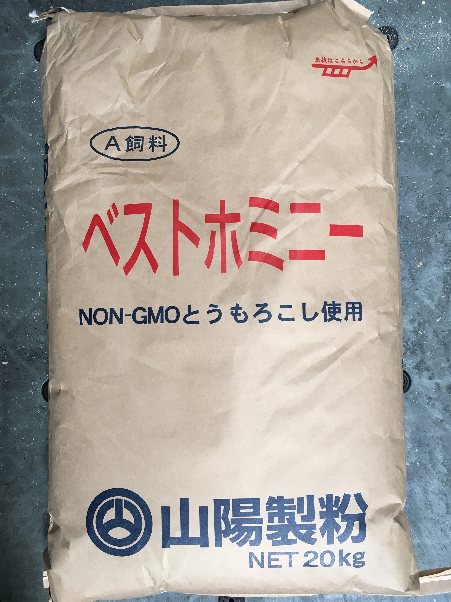
出荷形態
バラ・20kg紙袋・500kgフレコンでの出荷が可能です。ご要望に応じてご対応いたします。

小口販売
コーングリッツ・ホミニーフィード 販売窓口
業務用途でお使いの小規模事業者様・農家様向けに、小口での販売を承っております。
コーングリッツ
パン屋様・洋菓子屋様・クラフト醸造所様などにご利用いただいております。NON-GMOとうもろこしを原料とした安心・安全な製品です。荷姿：25kg紙袋、最小1袋から発送可能です。
ホミニーフィード
肥育農家様・きのこ農家様向けにお届けします。高エネルギーで飼料価値の高いコーン副産物です。荷姿：20kg紙袋、最小1袋から発送可能です。
お客様の声
コーングリッツをご利用のお客様


ホミニーフィードをご利用のお客様


ご注文の流れ
・コーングリッツ：25kg紙袋、ホミニーフィード：20kg紙袋、最小1袋から発送可能です。
・1〜50袋は常時発送可能です。51袋以上は別途ご相談ください。
・価格は見積り対応となります。フォーム送信後、2〜3営業日以内にご連絡します。
・送料は袋数・お届け先によって異なります。
・コーングリッツは製品の種類（粒度）をお知らせください。
見積り依頼フォーム
※ グリッツ：25kg/袋 ホミニー：20kg/袋 ／ 1〜50袋：常時発送可能 ／ 51袋以上：別途ご相談
サステナビリティ
山陽製粉株式会社の持続可能な事業活動への取り組み
私たちの取り組み
山陽製粉は創業以来、地域と共に歩んできた食品原材料メーカーです。食の安全・安心を守り、環境への負荷を低減しながら、次世代に豊かな社会を引き継ぐことが私たちの責務と考えています。
安全で高品質な製品の安定供給
お客様に安心してお使いいただける製品をお届けすることが、私たちの最も重要な使命です。アメリカ産の分別生産流通管理済み（NON-GMO）コーンのみを原料として使用し、製造工程における品質管理を徹底しています。
アレルギー反応が極めて少ないとうもろこしを原料とした製品は、食品メーカー・醸造メーカー・飼料メーカーなど幅広いお取引先に安定してお届けできるよう、生産体制の維持・強化に継続して取り組んでいます。
責任ある原材料の調達
原料となるとうもろこしはアメリカの契約農場にて生産された分別生産流通管理済みコーンを使用しています。調達先との長期的な信頼関係を築きながら、安定的かつ持続可能な原料確保に努めています。
気候変動や地政学リスクが原料調達に影響を与える可能性を認識しており、複数の調達ルートの確保と在庫管理の最適化により、お客様への安定供給体制を維持しています。
廃棄物ゼロへの挑戦と省エネ推進
とうもろこしはすべての部位を活用できる穀物です。コーングリッツの製造で生じる胚芽・皮・デンプン質はホミニーフィードとして飼料に活用しており、廃棄物をほぼ出さない製造体制を実現しています。
また、全フォークリフトのバッテリー車への転換（令和元年完了）を皮切りに、省エネ設備の導入・更新を継続的に推進しています。製品倉庫・包装設備のリニューアルを通じてエネルギー効率の改善にも取り組んでいます。
姫路・播磨地域の産業と食を支える
昭和12年の創業以来、兵庫県姫路市に根ざした企業として、地域経済・雇用・産業の維持発展に貢献してまいりました。姫路港に隣接する立地を活かした物流体制と、姫路港サイロ株式会社を通じた穀物保管・通関機能は、西播磨地域の食品産業を支えるインフラの一翼を担っています。
姫路商工会議所・兵庫県倉庫協会・日本コーングリッツ協会などの業界団体への参加を通じて、地域・業界全体の発展にも積極的に関与しています。
働きがいのある職場づくり
山陽製粉は従業員が長く安心して働き続けられる職場環境の整備に取り組んでいます。残業ゼロ・充実した福利厚生・永年勤続表彰制度など、従業員の生活と健康を大切にする制度を整備しています。
障がいの有無や背景に関わらず、一人ひとりの個性と能力を尊重する「誰もが主役になれる職場」の実現を目指し、適材適所の人材配置と相互補完のできる組織づくりを推進しています。
姫路市SDGs宣言
事業活動を通じたSDGsへの貢献
山陽製粉は、姫路市SDGs宣言をはじめ、事業活動全体を通じて以下の目標達成に貢献します。
ゼロに
健康と福祉を
経済成長も
つかう責任
具体的な対策を

姫路港サイロ株式会社
西播磨最大の穀物サイロ — 保管・輸送・通関をワンストップで
西播磨最大の穀物サイロを保有し、コーンをはじめ小麦・大麦・大豆・大豆ミール・粗飼料などを保管しております。グループ・提携企業と連携し、穀物の陸上輸送・海上輸送・通関業務など多様なオーダーにお応えします。常温・定温倉庫も保有しており、貨物の形態を問わず最適な状態での保管が可能です。
| 創立 | 昭和44年3月27日 |
|---|---|
| 資本金 | 6,000万円 |
| 代表者 | 代表取締役 宮本義太郎 |
| 本社 | 〒670-0935 姫路市北条口2丁目18番地 宮本ビル TEL：079-222-2003 |
| サイロ | 〒672-8064 姫路市飾磨区細江5号岸壁 TEL：079-235-7021 |
| 定温倉庫 | 〒672-8043 姫路市飾磨区中島字宝来3067-14 |
| 取扱品目 | 食品穀物・飼料穀物・食品原材料・肥料等 |
| 株主 | 山陽製粉株式会社 |
| 取引銀行 | 播州信用金庫 駅前支店 三井住友銀行 姫路支店 |
| 所属団体 | 一般社団法人 日本倉庫協会（兵庫県倉庫協会） 一般社団法人 姫路植物検疫協会 姫路商工会議所 飾磨港振興会 |
| 保管能力 | サイロ：52,784トン ／ 常温倉庫：1,800トン ／ 定温倉庫：9,200トン |

サイロ事業所
コンクリートサイロ 46基（24,012t）
鋼板サイロ 50基（28,772t）
常温倉庫 延床 983㎡（1,800t）
付属設備：サイロ冷却装置 / ニューマ式アンローダー / 粗飼料粉砕機 / 選別精選機械 / くん蒸設備（検疫くん蒸）/ 集塵設備 / 強制換気設備
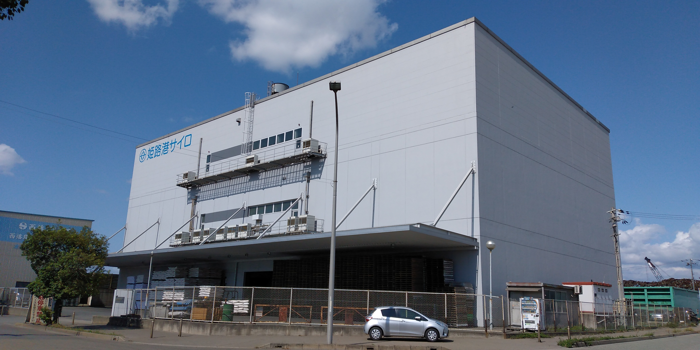
中島定温倉庫
延床面積 4,927.230㎡
建築構造 1・2階 鉄筋コンクリート、3階 鉄骨構造
冷却設備 定温（10〜15℃）/ 冷蔵（-2℃）
くん蒸設備 特A級 短時間くん蒸（検疫くん蒸）
付属設備：超音波式加湿設備 / オムニリフター
採 用 情 報
山陽製粉株式会社 採用情報
現在、新規採用は行っておりません
募集が再開された際は、このページにてお知らせいたします。
ご関心をお持ちいただき、ありがとうございます。
お問い合わせ
製品・採用・その他ご質問はこちらから
【重要：営業・勧誘メールについて】
当フォームへの営業・勧誘・サービス紹介を目的としたお問い合わせは、固くお断りいたします。
該当するお問い合わせへの返信は一切行いません。また、送信者情報を記録・保管する場合があります。
【その他注意事項】
- 内容確認のためにお電話させていただく場合もありますので、お電話番号のご記入をお願いします。
- 内容によりましては、ご返事までにお時間がかかる場合、またはご返事を差し上げられない場合がございますのでご了承下さい。
- 弊社からの返信を転載・二次利用することはお断り致します。
プライバシーポリシー
個人情報保護方針
山陽製粉株式会社（以下「当社」）は、お客様の個人情報の保護を重要な責務と認識し、以下の方針に基づき適切に取り扱います。
取得する情報と目的
当社は、お問い合わせフォームを通じて、お名前・会社名・メールアドレス・電話番号・お問い合わせ内容を収集しております。収集した個人情報は、お問い合わせへの回答および当社からのご連絡のみに使用し、その他の目的には使用しません。
第三者への提供の禁止
当社は、法令に基づく場合を除き、お客様の個人情報を事前の同意なく第三者に提供・開示することはありません。
安全管理措置
当社は、収集した個人情報の漏洩・滅失・毀損の防止に努め、適切な安全管理措置を講じます。個人情報へのアクセスは必要最小限の担当者に限定し、適切に管理します。
ご本人からの請求への対応
お客様ご本人から個人情報の開示・訂正・削除のご請求があった場合は、ご本人であることを確認の上、速やかに対応いたします。お問い合わせは下記の窓口までご連絡ください。
Cookieに関する方針
当社ウェブサイトでは、サービス向上を目的としてCookieを使用する場合があります。ブラウザの設定によりCookieを無効にすることができますが、一部機能がご利用いただけない場合があります。
方針の改定
当社は、法令の変更やサービス内容の変更に伴い、本プライバシーポリシーを予告なく変更する場合があります。変更後の内容は本ページに掲載した時点で効力を生じるものとします。
〒670-0935 兵庫県姫路市北条口2丁目18番地 宮本ビル
TEL：079-222-2003 FAX：079-223-0430
受付時間：平日 8:00〜17:00
制定日：2026年6月 山陽製粉株式会社
免 責 事 項
Disclaimer
山陽製粉株式会社（以下「当社」）は、本ウェブサイトのご利用に関して、以下の免責事項を定めております。本サイトをご利用いただく前に必ずお読みください。
情報の保証について
当社は、本ウェブサイトに掲載する情報の正確性・完全性・有用性について万全を期しておりますが、その内容を保証するものではありません。掲載情報は予告なく変更・削除される場合があります。
損害賠償の免責
本ウェブサイトのご利用、または利用不能により生じたいかなる損害についても、当社は一切の責任を負いません。また、本サイトに掲載された情報を利用したことによって生じた損害についても同様とします。
外部リンクに関する免責
本ウェブサイトからリンクされている外部サイトの内容については、当社は一切の責任を負いません。リンク先のウェブサイトのご利用は、お客様ご自身の判断と責任においてお願いいたします。
コンテンツの著作権
本ウェブサイトに掲載されているすべてのコンテンツ（文章・画像・デザイン等）の著作権は、山陽製粉株式会社に帰属します。無断転載・複製・改変等はお断りいたします。
法的事項
本免責事項の解釈および適用は、日本法に準拠するものとします。本サイトに関して生じた紛争については、神戸地方裁判所を第一審の専属的合意管轄裁判所とします。
制定日：2026年6月 山陽製粉株式会社
サイトマップ
Site Map